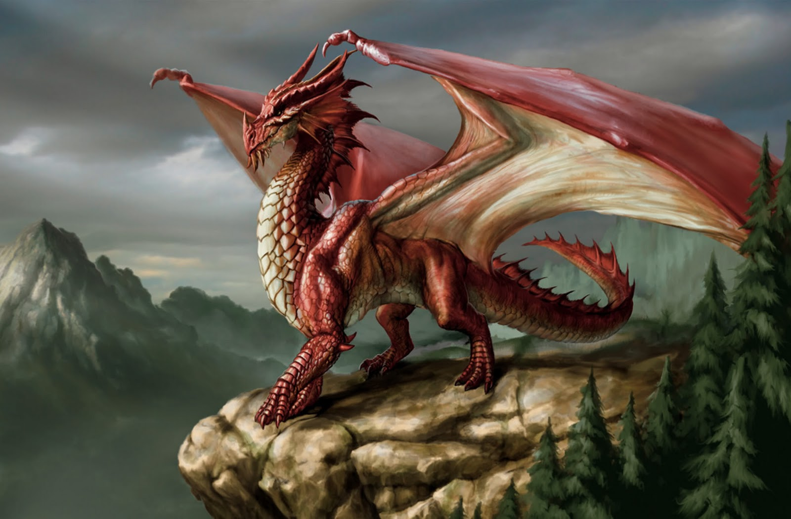
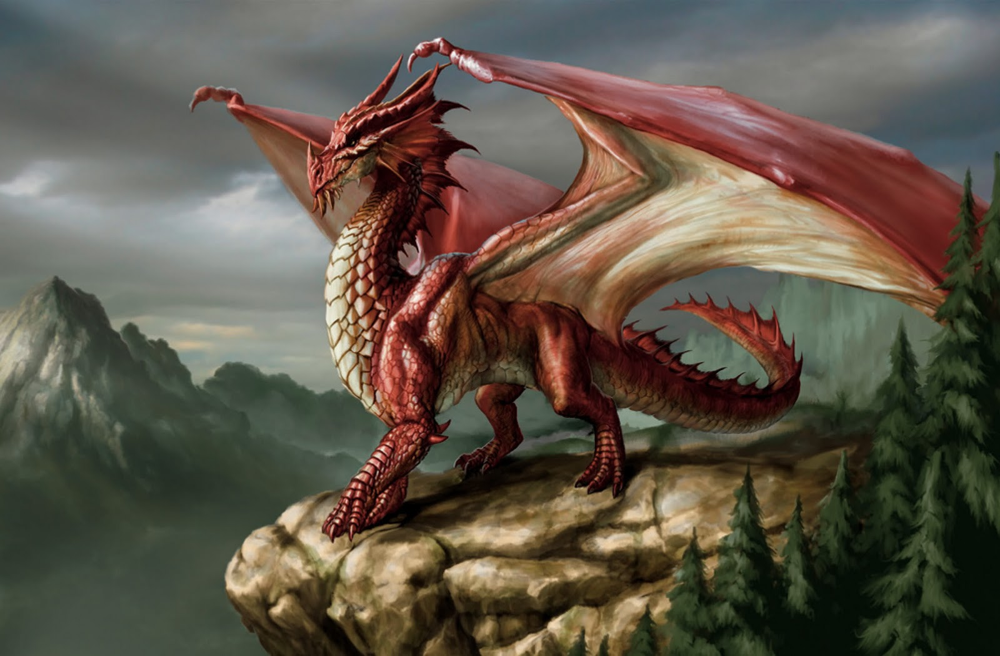
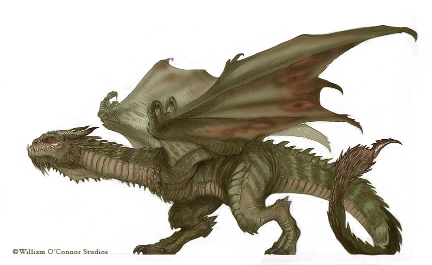
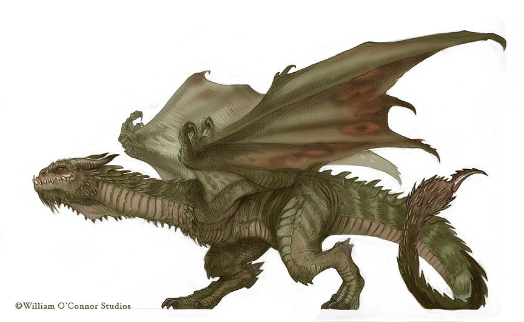

Dragons Vs. Wyverns? Whats the Difference
Before we start comparing what a dragon and a wyvern is, we must first make a few basic assumptions. Both are reptiles and both have scales and a tail. Now besides those similarities, their behavior and habits on how they live are very different. While you can call both of them dragons, most scholars like to think of wyverns as a subspecies of dragons.


 

What is a dragon
- Most dragons breath fire while others can spit venom, spew clouds of smoke, or water
- Dragon scales are harder than any known steel mankind has found, but through trial and error, knights have found various weak points around the body
- Dragon's are not very agile, but what they lack in speed, they make up for in durability and strength
- Dragons can grow to very large sizes, but they must consume vast amounts of food to maintain it
- If food is scarce, a dragon can go into hibernation for an unknown amount of time
- Dragons have four limbs and a pair of wings
- Some species of dragons hoard gold and other precious metals as a sign of wealth
 



What is a Wyvern
- Wyverns do not breath fire, but secrete venom from fangs and sharp spurs over their body
- Wyvern scales are softer than dragon scales, but not by much, this allows them to be more agile in the air
- Wyverns have two limps and a pair of wings that act as forelegs when they are on the ground
- Wyverns are more territorial than dragons